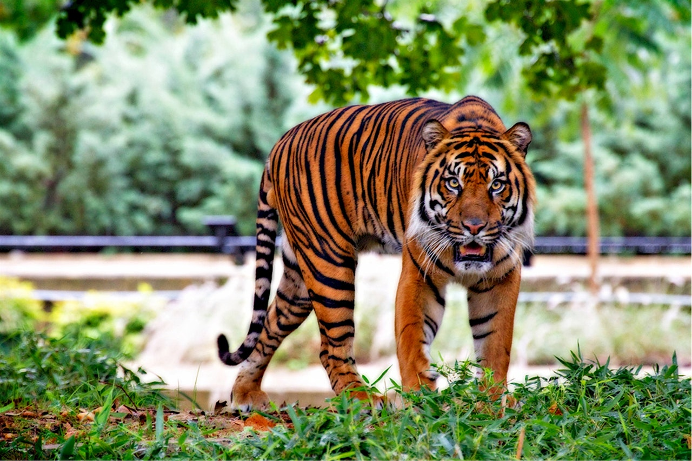

1. In nature, nothing is perfect and everything is perfect. Trees can be contorted, bent in weird ways, and they’re still beautiful. –Alice Walker
The rain was falling in gentle and melting showers; the south wind, laden with penetrating warmth, borne from lands hundreds of leagues distant, cut down drift and ice-hill with its fatal kisses; from the rocky cliff a thousand tiny cascades wept and plashed; and over the icy bonds of every brook and river another stream ran swiftly to the sea.
Elephants are the largest existing land animals. Three species are currently recognised: the African bush elephant, the African forest elephant, and the Asian elephant. Elephantidae is the only surviving family of the order Proboscidea; extinct members include the mastodons. The family Elephantidae also contains several now-extinct groups, including the mammoths and straight-tusked elephants. African elephants have larger ears and concave backs, whereas Asian elephants have smaller ears, and convex or level backs. Distinctive features of all elephants include a long proboscis called a trunk, tusks, large ear flaps, massive legs, and tough but sensitive skin. The trunk is used for breathing, bringing food and water to the mouth, and grasping objects. Tusks, which are derived from the incisor teeth, serve both as weapons and as tools for moving objects and digging. The large ear flaps assist in maintaining a constant body temperature as well as in communication. The pillar-like legs carry their great weight.

The Bengal tiger is a tiger from a specific population of the Panthera tigris tigris subspecies that is native to the Indian subcontinent.[3] It is threatened by poaching, loss, and fragmentation of habitat, and was estimated at comprising fewer than 2,500 wild individuals by 2011. None of the Tiger Conservation Landscapes within its range is considered large enough to support an effective population of more than 250 adult individuals.[1] India's tiger population was estimated at 1,706–1,909 individuals in 2010.[4] By 2018, the population had increased to an estimated 2,603–3,346 individuals.[5] Around 300–500 tigers are estimated in Bangladesh, 220–274 tigers in Nepal and 103 tigers in Bhutan.[1][6][7]
